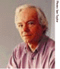

|
This page contains a welcome to INTERACT 99 from the IPIP TC13 Chair,The British HCI Group Chair and the Conference Chair plus information on: the Conference Secretariat, International Conference Committee, International Programme Committee Co-Chairs and Conference Committee.

Edinburgh Conference
Centre, Riccarton, Edinburgh, Scotland
30th August - 3rd September 1999
Under the auspices of IFIP TC13 on Human-Computer
Interaction
Hosted by The British Computer
Society
On behalf of the IFIP Technical Committee 13 on Human-Computer Interaction, I have great pleasure in inviting you to take part in this international HCI conference, the seventh in the IFIP TC13 series. INTERACT '99 has been created through the initiative and drive of the host society, the British Computer Society's HCI Group, and all the voluntary members of the various committees who have been planning the five-day event. The field of Human-Computer Interaction is a major key area in information technology and telecommunications in the 21st century, in the developing as well as the developed countries. The challenge is to make use of what has been learnt from HCI research and practice in the past and create better and more appropriately usable systems and applications for the next millennium. International participation and cooperation is especially important here. INTERACT '99 is a truly international conference, giving rise to discussion of international issues and activities, and for meeting with old and new friends from many countries as well as learning from HCI researchers and practitioners from around the world. The venue of INTERACT '99 is Scotland, with its very active HCI communities, and, in particular, Edinburgh, at the peak of its world-renowned annual Edinburgh Festival season. The atmosphere and traditions of this city create an ideal situation for you to join in and celebrate HCI advances, at the end of this century and in anticipation of the next. I look forward to meeting you at INTERACT '99, the flagship IFIP TC13 event. Judy Hammond, |
As chair of the British HCI Group I have had the pleasure of watching this conference develop from an idea floated at one of our executive meetings, to a proposal to IFIP, to the call for participation. Now, here I am writing a note for the advance programme. INTERACT '99 incorporates HCI'99 and so the British HCI Group have been pleased to support the conference both with advice and financially with start up loans. Of course, the real credit goes to the conference committee who can be justifiably proud of the exciting programme you have in front of you. For me Edinburgh always has an air of vigour and enthusiasm, an atmosphere that is accentuated at festival time. I know from experience that this atmosphere will carry over to conferences held in Edinburgh during the festival. Looking at this programme, with influential speakers from all over the world, I can see that many other people share my sense of anticipation. This is an exciting time for HCI -come to Edinburgh and be a part of this experience. Andrew Monk, |
 It was back in December 1999 instantiation of its INTERACT international conference series. Since then it has been my privilege to work with a gifted and highly dedicated team in evolving a landmark conference appropriate for the last major celebration of HCI this millennium. It is with a growing sense of anticipation that we now look forward to the culmination of almost three years of detailed thinking and planning. The response to the Call for Participation has been of a very high standard, assuring a high quality technical programme fully representative of the international scope and exciting variety of current work in HCI. The practical and financial support of the British HCI Group has been invaluable at all stages. I am deeply grateful for their commitment and encouragement - without them there would be no conference. The support of our other sponsors (NCR, Microsoft, Motorola, Glasgow Development Agency and Adademic Press) is also gratefully acknowledged, especially their willingness to commit early. This has assisted greatly in the financial planning, and enabled us to widen in significant ways the appeal and accessibility of the conference. The conference programme is still evolving - contributions to the posters, professional practice and experience, interactive experience, laboratory overview, workshop and video tracks can be submitted till May 10th. Whether you will be presenting or participating in other ways, you are assured of a stimulating and memorable experience. I hope you will take advantage of this opportunity to come to Edinburgh and INTERACT - you can be sure of a warm welcome and a wealth of memories to last well into the new age. Alistair Kilgour,
|
INTERACT '99 Secretariat, Meeting Makers, Jordanhill Campus,
76 Southbrae Drive, Glasgow G13 1PP, UKtel: +44 (0) 141 553 1930 fax: +44 (0) 141 552 0511
email: interact@meetingmakers.co.uk
International
Conference Committee
Alistair Kilgour, UK, Conference Chair
Judy Hammond, Australia, IFIP TC 13 Chair
David Gilmore, USA
Brian Shackel, UK, International Advisor
Organising
Committee
Christian Jones, Conference Manager
Chris Johnson, Technical Programme Chair
Jim Alty and John Karat, Doctoral Consortium
David Benyon & Dianne Murray, Panels
Chris Brotherton, Keynote Speakers
Gilbert Cockton & Alison Cawsey, Posters
Richard Coyne, Videos
Mark Dunlop, Web
Janet Finlay, Tutorials
Phil Gray, Publicity
Tom McEwan, Press and Media
Lachlan Mackinnon, Social Programme
Julian Newman and Steve Brewster, Interactive Experience
Rob Procter, Lab Overviews
Alistair Sutcliffe & Alan Newell, Workshops.
International
Programme Committee
Co-Chairs
M. Angela Sasse, UK, and Michael Tauber, Germany
Members
J. Abascal, Spain
A. Adams, Australia
C. Allwood, Sweden
J. Alty, UK
G. Andrienko, Germany
N. Andrienko, Germany
M. Apperley, New Zealand
W. Ark, USA
S. Arnesen, Norway
M. Atyeo, USA
C. Baber, UK
S. Balakrishan, USA
S. Balbo, Australia
M. Beaudouin-Lafon, France
D. Benyon, UK
J. Bonner, UK
S. Brewster, UK
D. Busse, UK
J. Carroll, USA
A. Cawsey, UK
J. Ca-as, Spain
L. Clark, UK
C. Unger, Germany
G. Cockton, UK
I. Connell, UK
M. Costabile, Italy
J. Coutaz, France
J. Darzentas, Greece
D. Diaper, UK
A. Dix, UK
C. Dormann, Denmark
P. Dourish, USA
J. Dowell, UK
S. Dray, USA
J. Earthy, UK
D. England, UK
P. Faraday, USA
F. Detienne, France
M. Gomes, Portugal
D. Gorgan, Romania
P. Gorny, Germany
P. Gray, UK
S. Greenberg, Canada
T. Gross, Austria
J. Grundy, New Zealand
S. Guest, USA
K. Gunn, USA
J. Hammond, Australia
M. Harrison, UK
H. Hasan, Australia
T. Hewett, USA
P. Holt, UK
J. Horton, UK
I. Ismail, UK
N. Iwayama, Japan
R. Jacob, USA
C. Johnson, UK
L. Johnston, Australia
S. Jones, Australia
J. Jorge, USA
A. Jorgensen, Denmark
V. Kaptelinin, Sweden
J. Karat, USA
J. Kay, Australia
R. Kazman, USA
R. Keil-Slawik, Germany
A. Kilgour, UK
M. Kurosu, Japan
E. Kuwana, Japan
A. Lantz, Sweden
L. Larsen, Denmark
M. Laughton, Canada
D. Lavery, UK
A. Lee, USA
P. Lehtiš, Finland
H. Lowe, UK
L. Loevborg, Denmark
A. MacLean, France
V. Matousek, Czech Republic
I. McClelland, The Netherlands
A. Monk, UK
M. Montgomery Masters, UK
M. Muller, USA
J. Newman, UK
L. Nigay, France
J. Noble, USA
M. Noirhomme-Fraiture, Belgium
L. Oestreicher, Sweden
N. Ozkan, Australia
P. Palanque, France
F. Paterno, Italy
J. Pino, Chile
R. Procter, UK
H. Reiterer, Germany
D. Rigas, UK
C. Roast, UK
M. Rosson, USA
V. Ruvinskaia, Ukraine
D. Scapin, France
A. Sears, USA
B. Shackel, UK
M. Sikorski, Poland
C. Stary, Austria
A. Sutcliffe, UK
G. Szwillus, Germany
A. Takeuchi, Japan
J. Tanaka, Japan
J. Tang, USA
B. Thomas, Australia
R. Thomas, Australia
M. Tscheligi, Austria
S. Turner, UK
C. van der Mast, The Netherlands
G. van der Veer, The Netherlands
J. Vanderdonckt, Belgium
A. Watson, UK
J. Whittle, UK
P. Wild, UK
C. Wolf, USA
W. Wong, New Zealand
V. Wulf, Germany
J. Ziegler, Germany
N. Zin, UK
About IFIP TC13
The International Federation for Information Processing (IFIP) is
a multinational federation of professional and technical
organisations concerned with information processing. IFIP
represents countries from all regions of the world and comprises
a total of 59 Member organisations. IFIP's mission is to be the
leading, truly international, apolitical organisation which
encourages and assists in the development, exploitation and
application of Information Technology for the benefit of all
people. IFIP brings together professionals at the leading edge of
practice and experience and acts as a catalyst to advance the
state-of-the-art. The core of IFIP's scientific work is carried
out by its Technical Committees and associated Working Groups,
who plan and conduct over 60 events annually and publish many
scientific publications.
IFIP Technical Committee 13 on Human-Computer Interaction (IFIP TC13) is an international, multidisciplinary committee, involving specialists in human factors, ergonomics, cognitive science, computer science, design and related disciplines. Its main orientation is towards improving interactions between people and computers, encouraging the growth of HCI research and disseminating its benefits throughout the world. IFIP TC13 strives to develop and apply rigorous methods for studying, modelling and measuring human-computer systems. Areas of study include: problems people have with computers; the impact of computers on people in individual and organisational contexts; determinants of utility, usability and acceptability; appropriate allocation of tasks between computers and users; modelling the user to assist better system design; and harmonising the computer to the characteristics and needs of users.
IFIP TC13 Working Groups consist of HCI experts from many countries working in the areas of HCI education, methodologies for user-centred system design, HCI and people with special needs, user interface engineering, and the most recently established Working Group on Human Error, Safety and System Development. New Working Groups are formed as areas of significance to HCI arise. IFIP TC13 and its Working Groups host numerous working conferences and workshops on HCI issues and concerns. Its premier flagship conference is INTERACT, held biennially in different countries in the world.